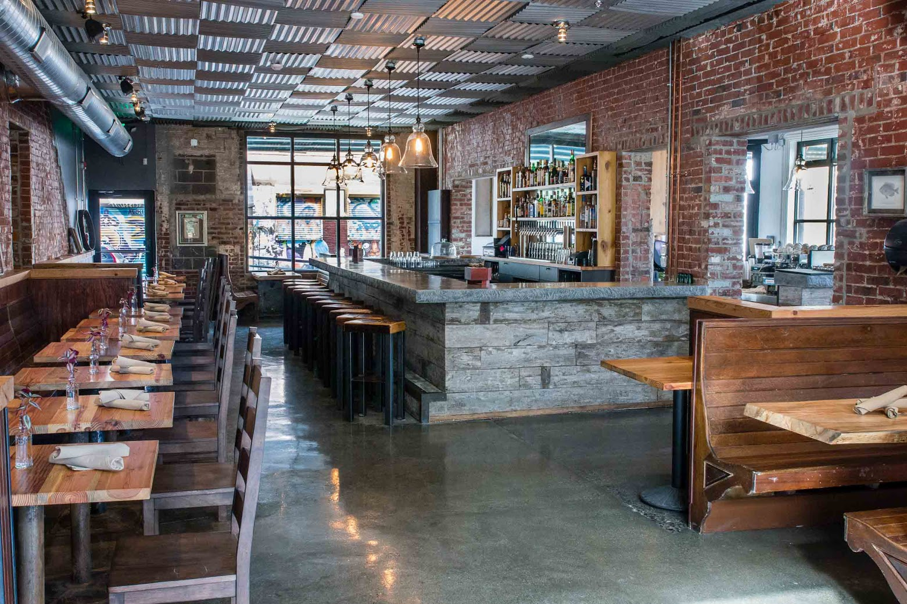
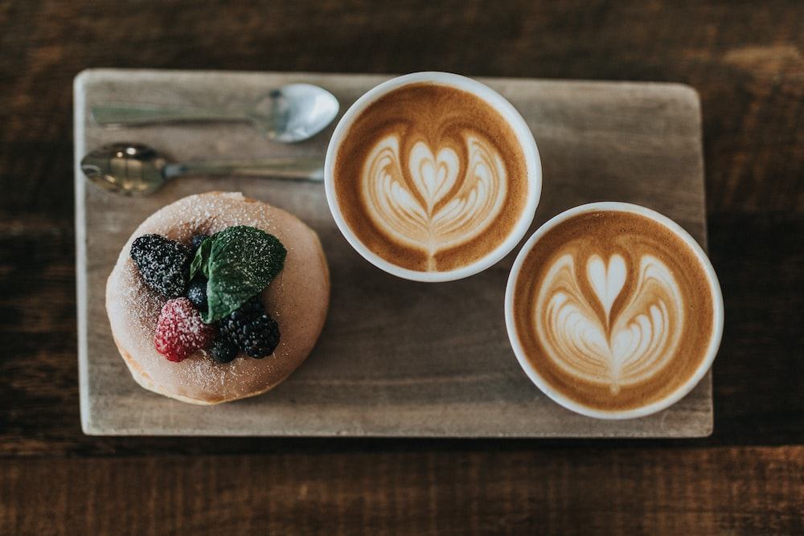
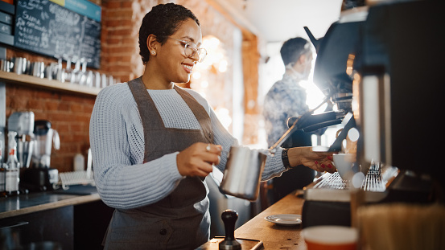

Indulge in our delicious coffee
and freshly baked pastries at
The Cafe
About The cafe
Welcome to The Cafe !We're a family-owned cafe with a passion for serving up the best coffee and
pastries
in town. Our cozy and inviting atmosphere is the perfect place to relax and enjoy a cup of coffee or
get
some work done.
Our menu features a wide variety of coffee drinks, including classic espresso drinks, seasonal
specials,
and freshly brewed drip coffee. We also offer a selection of tea, hot chocolate, and other
non-coffee
beverages. Our pastry case is stocked daily with a variety of freshly baked croissants, muffins,
scones,
and other treats. In addition, we offer a selection of sandwiches and salads for lunch.
We believe in using only the freshest and highest quality ingredients in all of our menu items, and
our
team is dedicated to providing exceptional service to our customers.
Come visit us at The Cafe and experience the warmth and hospitality of our cafe.The cafe is a
cozy
spot tucked away in a quiet corner of the city,
with warm wooden tables and chairs that invite you to sit and relax.The smell of fresh coffee and
baked
goods fills the air, and the sound of gentle chatter and soft music creates a peaceful ambiance.
Customers can be seen reading, working on laptops, or simply enjoying each other's company. The menu
offers a variety of drinks, including espressos, lattes, and teas,
as well as a selection of pastries and light bites. The friendly baristas are
always happy to recommend their favorite drinks or offer a smile to brighten up
your day. Overall, the cafe is a welcoming and comfortable space where you can
escape the hustle and bustle of the city and enjoy a moment of tranquility.



Menu
Coffee Drinks:
Espresso: $2.50
Americano: $3.00
Macchiato: $3.50
Cortado: $3.75
Cappuccino: $4.00
Latte: $4.50
Mocha: $5.00
Cold Brew: $4.00
Iced Coffee: $4.50
Nitro Cold Brew: $5.00
Tea:
Loose Leaf Tea: $3.50
Chai Latte: $4.50
Matcha Latte: $5.00
Hot Chocolate:
Classic Hot Chocolate: $4.00
Flavored Hot Chocolate: $4.50
Pastries:
Croissants: $2.50-$3.50
Muffins: $2.75
Scones: $3.00
Cookies: $1.50-$2.00
Brownies: $2.50
Sandwiches:
Turkey Club: $9.00
Grilled Cheese: $7.50
Veggie Wrap: $8.50
Chicken Salad Sandwich: $9.50
Salads:
Classic Caesar Salad: $8.50
Cobb Salad: $10.00
Greek Salad: $9.50
Where
Our Location:
Rustic Roast
123 Main Street
New York, NY 10001
Phone: (555) 555-1234
Email: info@rusticroastcafe.com
Hours of operation
Monday to Friday: 7am to 6pm
Saturday: 8am to 5pm
Sunday: Closed
Special events or promotion
Join us for live music on Thursday nights from 7pm to 9pm.
Directions:
By Car:
We are located on the corner of Main Street and 1st Avenue. From the West Side
Highway, take the 23rd Street exit and head east. Turn right onto 1st Avenue and continue for four
blocks until you reach Main Street. There is street parking available on Main Street and nearby side
streets.
By Public Transit:
Take the F or M subway to the 23rd Street station. Exit at the northwest
corner of 23rd Street and 6th Avenue and head east on 23rd Street. Turn left onto Main Street and
continue for three blocks until you reach 1st Avenue. Rustic Roast will be on your left.
Directions by Bike or Foot: Rustic Roast is located on the Midtown Manhattan Greenway, a pedestrian
and
bike path that runs along the Hudson River. From the greenway, turn east onto 23rd Street and
continue
for four blocks until you reach Main Street.
Parking Options:
There is street parking available on Main Street and nearby side streets.
There are also several
parking garages within a few blocks of Rustic Roast, including Icon Parking at 28th Street and 1st
Avenue.
Valet Parking: We offer valet parking on Friday and Saturday nights from 5pm to 11pm for $10 per
car.